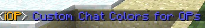

iOP
By Shadrxninga
Latest version: ZIP (with help and config file) JAR (Comming soon)
Source code: GitHub
Don't like permissions? But want to stand out from the normal users on
your server? iOP is what you need! This plugin allows you to change the
name color and the message color as well as add for OPs as well as
Players. You can even change the colors and prefixes per Player as well.

Features:
- Customizable Name Color for Ops and Players
- Customizable Message Color for Ops and Players
- Customizable Prefix With Colors! for Ops and Players
- Customizable Colors Per Player!
- No need to restart to change name colors, just type /iop
- A online list with colors.
How to use the config:
Open up config.yml (In plugins/iOP) in NotePad++ or another text editor (Not NotePad)
OP-NameColor: '&b'
OP-MsgColor: '&e'
OP-Prefix: '&4[&fAdmin&4]'
Player-NameColor: '&6'
Player-MsgColor: '&4'
Player-Prefix: '&5[&fPlayer&5]'
Normal Chat: false
Colored Online List: true
shadrxninga:
prefix: '&1[iOP Dev]'
name: '&6'[/COLOR]
msg: '&f'
Bob:
name: '&2'
The Numbers stand for color codes:
| Sample |
Code
|
Name
|
|
&0
|
Black
|
|
&1
|
Dark Blue
|
|
&2
|
Dark Green
|
|
&3
|
Dark Teal
|
|
&4
|
Dark Red
|
|
&5
|
Purple
|
|
&6
|
Gold
|
|
&7
|
Grey
|
|
&8
|
Dark Grey
|
|
&9
|
Blue
|
|
&a
|
Bright Green |
|
&b
|
Teal
|
|
&c
|
Red
|
|
&d
|
Pink
|
|
&e
|
Yellow
|
|
&f
|
White
|
So all you have to do is put the code of the color you want in the config and Hey Presto!
You can choose if you want chat to show like this <player> or like this Player:
Set Normal Chat to true if you want the default <player>
Prefixs:
If you want to have a prefix in front of an ops name just put it in the OPs-Prefix field.
If you want it to be colored put a color code wherever you want that color.
For example:
&4[&1Admin&4]
Would look like this in chat:
[Admin]
For Player names and prefixes just do what you did with the ops but in the player fields.
Per Player Colors:
Note: This feature is optional if you don't want to use it just remove everything under the colored online list option.
This feature allows you to have
different name colors per player. Bob can be blue and John could be Red
and all other Ops can be purple.
To do this in the config file add this underneath the other options
playername:
prefix: '&4[Admin] '
name: '&6'
msg: '&e'
Change playername to the players name
you want to change. You can add any of the other options and if you
leave one out it will just default to the Op or Players default option
Note: YML is a very fussy language - if you are having problems paste you config here and it will tell you what is wrong with it. Also if you are using notepad to edit the config... Don't use it, use NotePad++
If you are still having trouble post your config and I will fix it up for you.
Commands:
- /iop - Reloads the config (Ops only)
- /online (Also /list and /playerlist) - displays an online list with iOPs colors
Changelog:
Version 0.6_02
- Fixed a bug where null would show up instead of the color in the online list
Version 0.6_01
Version 0.6
- Added per player settings.
Version 0.5
- Added a Colored online list! - Able to be turned off.
- Updated to RB 766
Version 0.4
- Fixed a few formating errors
- Added the ability to change between <player> and Player:
Version 0.3
- Normal players can now have colors and prefixes
Version 0.2
- Changed Color Code Format
- Colors Can Now Be Used In Prefixes
Version 0.1
I spend a bit of time making this plugin and donations would be appreciated
Donate